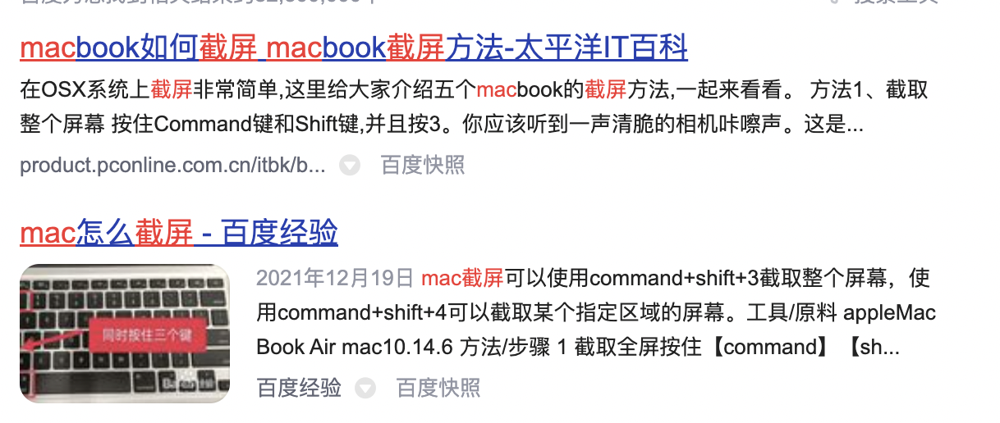

#一级标题 ##二级标题 ###三级标题 正文直接在文本中输入就可以了： 那么今天是2022年4月22日
print(
'hello world'
)
如果加上指定语言名称，就会根据语言进行程序高亮显示
std::cout << hello world << std::endl;
正文中的代码 show ip reference
有序列表 正常用数字+点符号即可 1.123 2.456 3.789
无序列表
加粗用两个星号表示
如果是斜体就用一个星号表示
如果是删除线，那么就用两个波浪线
| a | b | c |
|---|---|---|
| 居中 | 左对齐 | 左对齐 |
表格的制作就是用｜符号来表示隔断，然后用：和--结合来表示居中对齐方式
图片插入按照下面这个格式，中括号[]中是对该图片的称呼，小括号()中是图片位置 
插入链接 百度一下
画流程图
graph TD
A-->4月22日完成对于markdown笔记的学习
A-->5月1日进行这段时间的学习整理
2022年5月1日需要进行调休-->D
X-->C
C-->A
时序图
sequenceDiagram
participant Alice
participant Bob
Alice->>John: Hello John, how are you?
loop Healthcheck
John->>John: Fight against hypochondria
end
Note right of John: Rational thoughts
prevail...
John-->>Alice: Great!
John->>Bob: How about you?
Bob-->>John: Jolly good!
甘特图
gantt
dateFormat YYYY-MM-DD
title 为mermaid加入甘特图功能
section A部分
完成任务 :done, des1,2019-01-06,2019-01-08
正进行任务 :active, des2,2019-01-09,3d
待开始任务 :des3, after des2, 5d
待开始任务2 :des4, after des3, 5d
section 紧急任务
完成任务 :crit,done,2019-01-06,24h
实现parser :crit,done,after des1, 2d
为parser编写test :crit, active, 3d
待完成任务 :crit,5d
为rendere编写test: 2d
将功能加入到mermaid: 1d